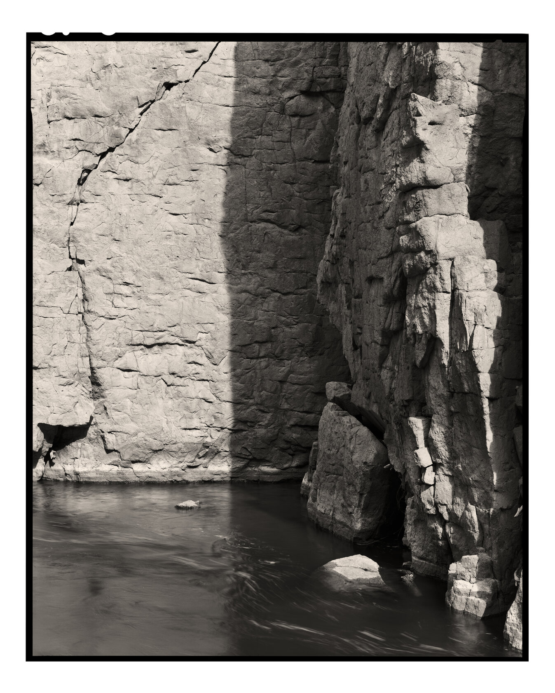
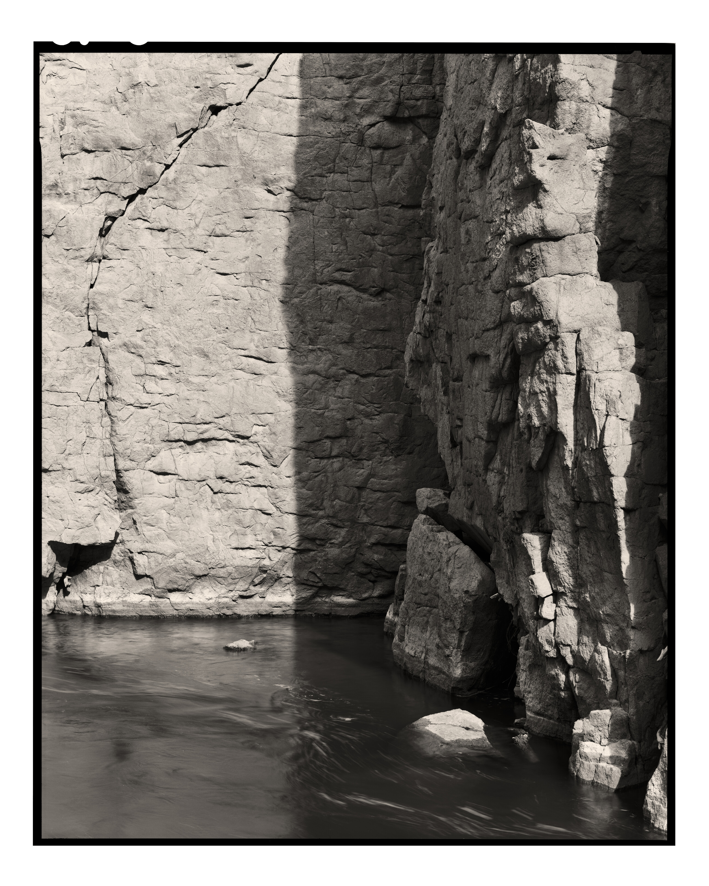

 Owens River Gorge Digital scan from film negative Photographed April 2024 Owens Valley, California 8x10" film N-1 development 18" lens no filter f/45 Not available as a print next photograph → ← previous photograph back to photographs ✕  − + Owens River Gorge, digital scan from film negative, 2024